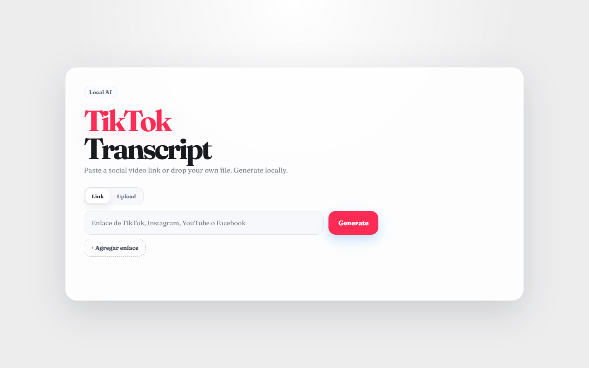
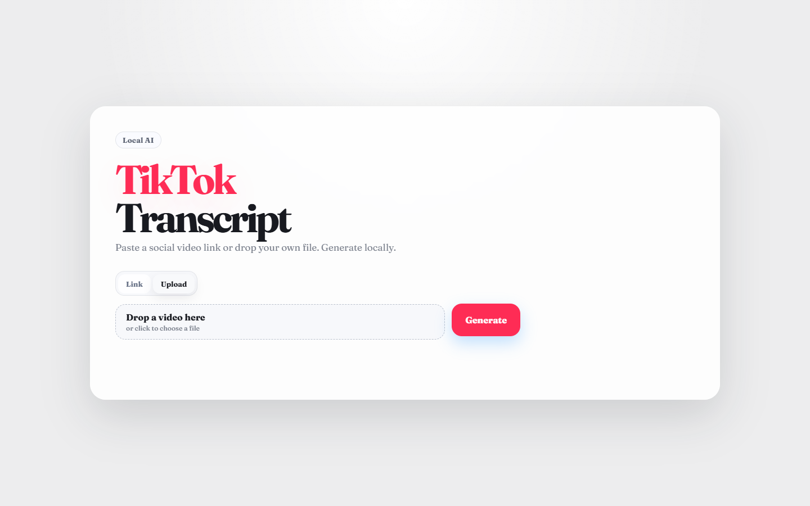
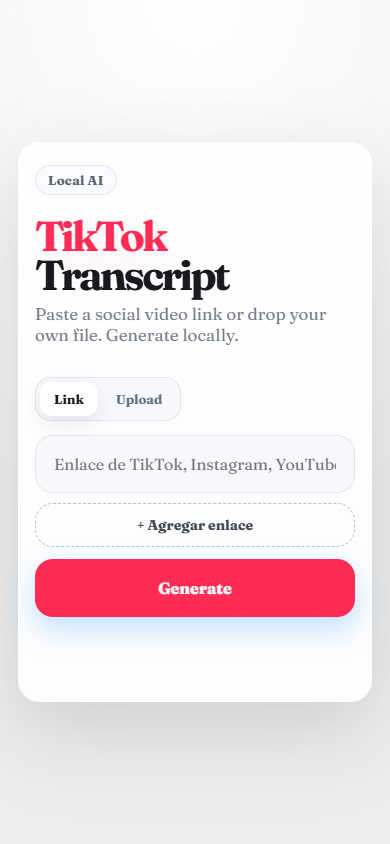

← Todos los proyectos
Proyecto / 08
TikTok Local Transcriber
Del video a un texto con el que se puede trabajar
Herramienta local de transcripción de videos de TikTok, construida para procesar contenido en la propia computadora.

01 / Propósito
Una idea llevada a la práctica.
Herramienta personal.
Áreas y tecnologíasPython · transcripción de audio
Esta ficha presenta el alcance documentado y material visual seleccionado. El código de desarrollo y los datos privados permanecen fuera de esta vitrina.
02 / Lo que hace
Funciones principales
- Inicio local desde un acceso directo o script.
- Interfaz web local para el flujo de transcripción.
- Base de transcripción con MOSS-Transcribe-Diarize.
03 / Vista del proyecto
Así toma forma.
Capturas de la interfaz local en estado vacío, octubre de 2026. No se muestran videos, audio ni transcripciones personales.


04 / Explorar